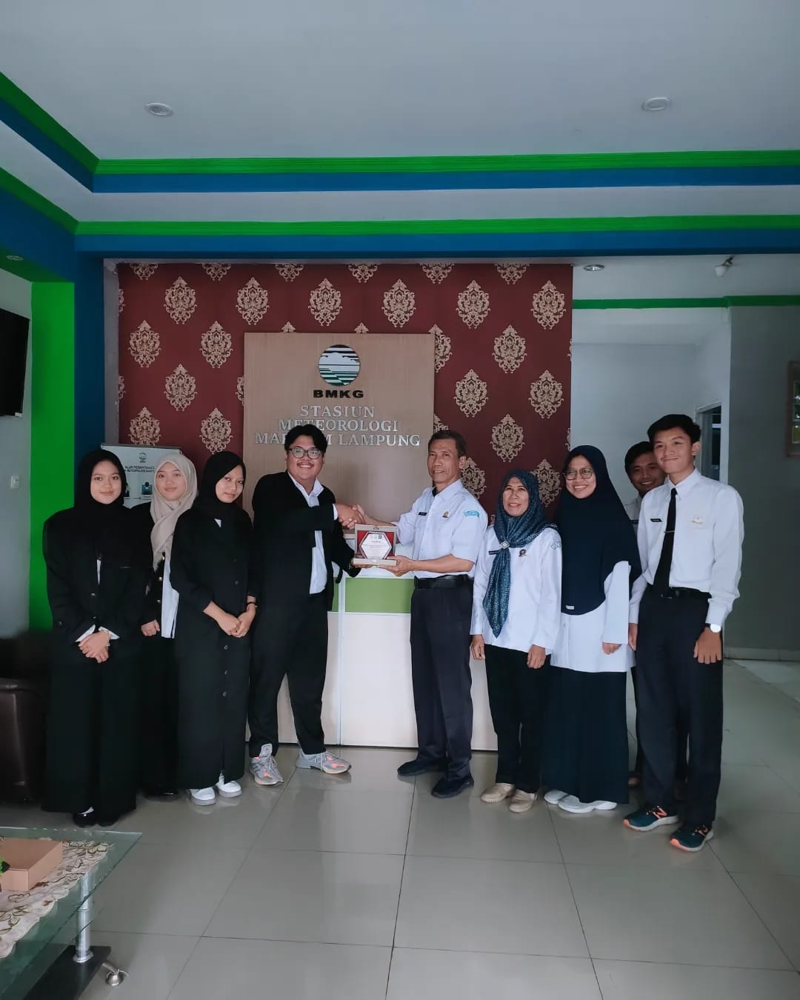

Work Experience
Institut Teknologi Sumatera
Algorithm Programming Lab Assistant
Aug 2024 – Dec 2024

- Guided more than 50 students in understanding algorithmic logic and algorithm design.
- Developed and refined practicum modules for structured and effective learning.
BMKG – Maritime Meteorological Station Panjang
Data Analyst Intern
Jun 2024 – Aug 2024

- Collected, cleaned, and validated meteorological data for forecasting support.
- Processed data using Microsoft Excel and Python.
- Built Python-based predictive models for data-driven decision making.
PT CJ Feed and Care Indonesia
Data Entry Intern
Nov 2019 – Jan 2020
- Managed administrative and General Affairs documentation.
- Performed data entry, consolidation, and verification using Microsoft Excel.